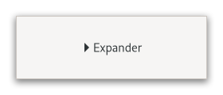

Gtk.Expander¶
Example¶

- Subclasses:
None
Methods¶
- Inherited:
Gtk.Widget (183), GObject.Object (37), Gtk.Accessible (18), Gtk.Buildable (1)
- Structs:
class |
|
class |
|
|
|
|
|
|
|
|
|
|
|
|
|
|
|
|
|
|
|
|
Virtual Methods¶
- Inherited:
Gtk.Widget (25), GObject.Object (7), Gtk.Accessible (7), Gtk.Buildable (9)
Properties¶
- Inherited:
Name |
Type |
Flags |
Short Description |
|---|---|---|---|
r/w/en |
|||
r/w/c/en |
|||
r/w/c |
|||
r/w/en |
|||
r/w/en |
|||
r/w/c/en |
|||
r/w/c/en |
Signals¶
- Inherited:
Name |
Short Description |
|---|---|
Activates the |
Fields¶
- Inherited:
Class Details¶
- class Gtk.Expander(**kwargs)¶
- Bases:
- Abstract:
No
Allows the user to reveal or conceal a child widget.
<picture> <source srcset=”expander-dark.png” media=”(prefers-color-scheme: dark)”> <img alt=”An example
Gtk.Expander" src=”expander.png”> </picture>This is similar to the triangles used in a
GtkTreeView.Normally you use an expander as you would use a frame; you create the child widget and use [method`Gtk`.Expander.set_child] to add it to the expander. When the expander is toggled, it will take care of showing and hiding the child automatically.
- Special Usage
There are situations in which you may prefer to show and hide the expanded widget yourself, such as when you want to actually create the widget at expansion time. In this case, create a
GtkExpanderbut do not add a child to it. The expander widget has an [property`Gtk`.Expander:expanded] property which can be used to monitor its expansion state. You should watch this property with a signal connection as follows:```c static void expander_callback (
GObject.Object*object,GObject.ParamSpec*param_spec,objectuser_data) {Gtk.Expander*expander;expander = GTK_EXPANDER (object);
if (
Gtk.Expander.get_expanded(expander)) { // Show or create widgets } else { // Hide or destroy widgets } }static void create_expander (void) {
Gtk.Widget*expander =Gtk.Expander.new_with_mnemonic(”_More Options”); g_signal_connect (expander, “notify::expanded”, G_CALLBACK (expander_callback),None);// … } ```
An example of a UI definition fragment with
Gtk.Expander:``xml <object class=”GtkExpander”>
- <property name=”label-widget”>
<object class=”GtkLabel” id=”expander-label”/>
</property> <property name=”child”>
<object class=”GtkEntry” id=”expander-content”/>
</property>
</object> ``
- CSS nodes
`` expander-widget ╰── box
├── title │ ├── expander │ ╰── <label widget> ╰── <child>
GtkExpanderhas a main nodeexpander-widget, and subnodeboxcontaining the title and child widget. The box subnodetitlecontains nodeexpander, i.e. the expand/collapse arrow; then the label widget if any. The arrow of an expander that is showing its child gets the:checkedpseudoclass set on it.- Accessibility
GtkExpanderuses the [enum`Gtk`.AccessibleRole.button] role.- classmethod new(label)[source]¶
- Parameters:
- Returns:
a new
GtkExpanderwidget.- Return type:
Creates a new expander using label as the text of the label.
- classmethod new_with_mnemonic(label)[source]¶
- Parameters:
label (
strorNone) – the text of the label with an underscore in front of the mnemonic character- Returns:
a new
GtkExpanderwidget.- Return type:
Creates a new expander using label as the text of the label.
If characters in label are preceded by an underscore, they are underlined. If you need a literal underscore character in a label, use “__” (two underscores). The first underlined character represents a keyboard accelerator called a mnemonic.
Pressing Alt and that key activates the button.
- get_child()[source]¶
- Returns:
the child widget of self
- Return type:
Gtk.WidgetorNone
Gets the child widget of self.
- get_expanded()[source]¶
- Returns:
the current state of the expander
- Return type:
Queries a
GtkExpanderand returns its current state.Returns
Trueif the child widget is revealed.
- get_label()[source]¶
- Returns:
The text of the label widget. This string is owned by the widget and must not be modified or freed.
- Return type:
Fetches the text from a label widget.
This is including any embedded underlines indicating mnemonics and Pango markup, as set by [method`Gtk`.Expander.set_label]. If the label text has not been set the return value will be
None. This will be the case if you create an empty button withGtk.Button.new() to use as a container.
- get_label_widget()[source]¶
- Returns:
the label widget
- Return type:
Gtk.WidgetorNone
Retrieves the label widget for the frame.
- get_resize_toplevel()[source]¶
- Returns:
the “resize toplevel” setting.
- Return type:
Returns whether the expander will resize the toplevel widget containing the expander upon resizing and collapsing.
- get_use_underline()[source]¶
- Returns:
Trueif an embedded underline in the expander label indicates the mnemonic accelerator keys- Return type:
Returns whether an underline in the text indicates a mnemonic.
- set_child(child)[source]¶
- Parameters:
child (
Gtk.WidgetorNone) – the child widget
Sets the child widget of self.
- set_expanded(expanded)[source]¶
- Parameters:
expanded (
bool) – whether the child widget is revealed
Sets the state of the expander.
Set to
True, if you want the child widget to be revealed, andFalseif you want the child widget to be hidden.
- set_label(label)[source]¶
-
Sets the text of the label of the expander to label.
This will also clear any previously set labels.
- set_label_widget(label_widget)[source]¶
- Parameters:
label_widget (
Gtk.WidgetorNone) – the new label widget
Set the label widget for the expander.
This is the widget that will appear embedded alongside the expander arrow.
- set_resize_toplevel(resize_toplevel)[source]¶
- Parameters:
resize_toplevel (
bool) – whether to resize the toplevel
Sets whether the expander will resize the toplevel widget containing the expander upon resizing and collapsing.
Signal Details¶
- Gtk.Expander.signals.activate(expander)¶
- Signal Name:
activate- Flags:
- Parameters:
expander (
Gtk.Expander) – The object which received the signal
Activates the
GtkExpander.
Property Details¶
- Gtk.Expander.props.child¶
- Name:
child- Type:
- Default Value:
- Flags:
The child widget.
- Gtk.Expander.props.expanded¶
- Name:
expanded- Type:
- Default Value:
- Flags:
Whether the expander has been opened to reveal the child.
- Gtk.Expander.props.label¶
-
The text of the expanders label.
- Gtk.Expander.props.label_widget¶
- Name:
label-widget- Type:
- Default Value:
- Flags:
A widget to display instead of the usual expander label.
- Gtk.Expander.props.resize_toplevel¶
- Name:
resize-toplevel- Type:
- Default Value:
- Flags:
When this property is
True, the expander will resize the toplevel widget containing the expander upon expanding and collapsing.
- Gtk.Expander.props.use_markup¶
- Name:
use-markup- Type:
- Default Value:
- Flags:
Whether the text in the label is Pango markup.